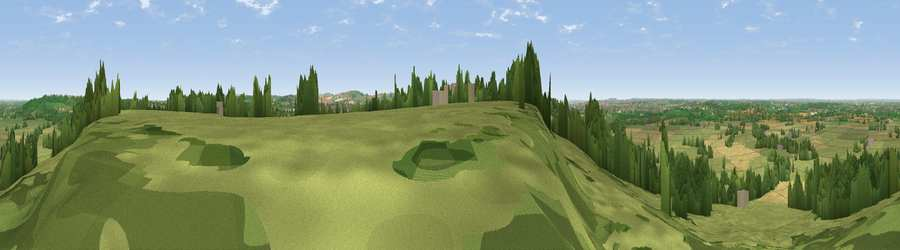

Viewpoint near Bremhill
#15723 in England · top 27% of its area beats it · near BremhillThe view, rendered

A 360° render of this exact spot computed from the terrain model, tree cover and land cover — summer colours, afternoon light, calibrated against photographs of famous viewpoints. Real trees, hedges and buildings will differ in detail.
The panorama
Grey silhouette: terrain skyline in each direction (720 bearings, Earth curvature and refraction included). Dashed green: skyline with trees (+15 m) and buildings (+8 m) as obstacles. Blue strip: how far the ground is visible on each bearing.
Where the view opens
Wedge length = distance to the farthest visible ground on that bearing (vegetation-aware). Rings at 10, 25 and 50 km.
What fills the view
63% grassland · 18% woodland · 17% cropland · 2% built-up
Angular shares of the visible panorama (visual magnitude), not map area. Landscape diversity 0.42 (0–1 Shannon).
Key numbers
More beautiful places nearby
The staircase of upgrades: each row has a higher view potential than everything closer. Driving times are estimates from straight-line distance, calibrated against real road routing — check an actual route before setting out.
| Place | Direction | Drive | Score |
|---|---|---|---|
| Viewpoint near Bremhill | NE · 0 km | ~1 min | 57.3 |
| Viewpoint near Foxham | NNE · 4 km | ~9 min | 57.6 |
| Viewpoint near Foxham | NNE · 4 km | ~10 min | 60.5 |
| Viewpoint near Bowden Hill | SW · 6 km | ~13 min | 62.1 |
| Viewpoint near Clyffe Pypard | E · 8 km | ~16 min | 62.5 |
| Viewpoint near Clyffe Pypard | E · 8 km | ~16 min | 63.7 |
| King's Play Hill | SSE · 9 km | ~17 min | 73.9 |
| Morgan's Hill | SE · 9 km | ~18 min | 74.3 |
51.46609, -2.03846 · source: screening · position refined by local search. Computed location — check access rights before visiting.